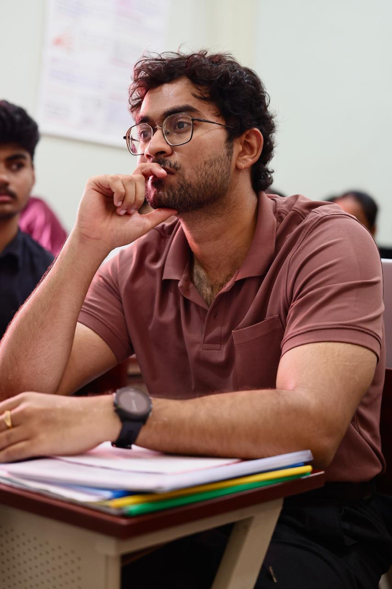
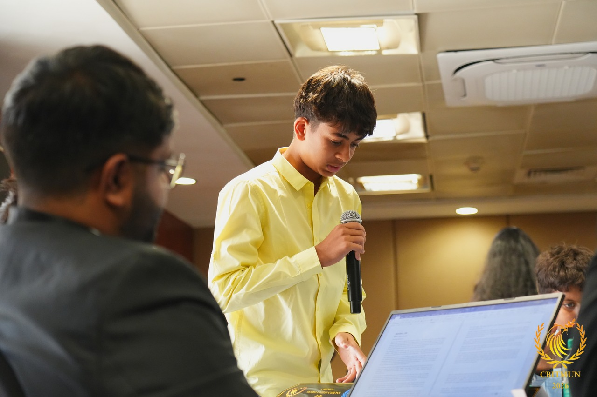
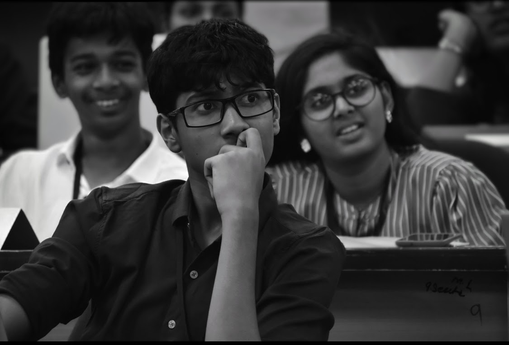

About the Committee
DISEC is the General Assembly First Committee that addresses global challenges to peace. It focuses on the regulation of armaments, the mechanics of disarmament, and international arrangements to promote security. From nuclear non-proliferation to the illicit trade of small arms, DISEC seeks multilateral solutions to reduce global military threats.
Agenda
Assessing the Risk of Nuclear Proliferation in the South Asian Region.
Executive Board

Chairperson: Suraj Veeru
Suraj developed a strong interest in diplomacy and global affairs through his involvement in the Model United Nations circuit, where he actively participates in debates, negotiations, and policy-driven discussions. With a curiosity for international relations and conflict resolution, he enjoys researching global issues and presenting solution-oriented arguments that encourage meaningful dialogue. Suraj believes MUNs provide an excellent platform to build critical thinking, communication, and collaboration skills. Alongside his academic pursuits, Suraj explores coding and technology-driven problem solving, reflecting his interest in innovation and analytical thinking. Approachable and collaborative in nature, Suraj looks forward to contributing to DISEC as part of the Executive Board and helping create an engaging and productive committee experience for all delegates.

Vice Chairperson: Vihan Kasuganti
Vihan Kasuganti is an up-and-coming MUNer in the Hyderabad Circuit, with his diversified MUN portfolio, attending many unique committees ranging from UNEP to DISEC to special committees like R&AW He is also a strong believer in the importance of confidence and passion when it comes to MUNs, and it’s what drives his ever-growing love for debate as a whole. Away from MUNs, you can find Vihan gaming, playing cricket, participating in wildlife photography, or playing GeoGuessr.

Rapporteur: Abhiram Katta
Hi, I’m Abhiram! I’m serving as the rapporteur for DISEC during the conference. I’ve been an avid MUNner since 2024 and, having attended 15 conferences, MUN has been a huge part of my life. I’ve grown so much through the platform of discussion MUN has provided me, allowing me to be outgoing and approachable.Outside of school and conferences, I’m passionate about basketball and volleyball, as well as volunteering at animal welfare NGOs. I hope I help make dpshMUN 2026 unforgettable!
Background Guide
Download the official background guide for this committee: UNSC Background Guide (PDF)